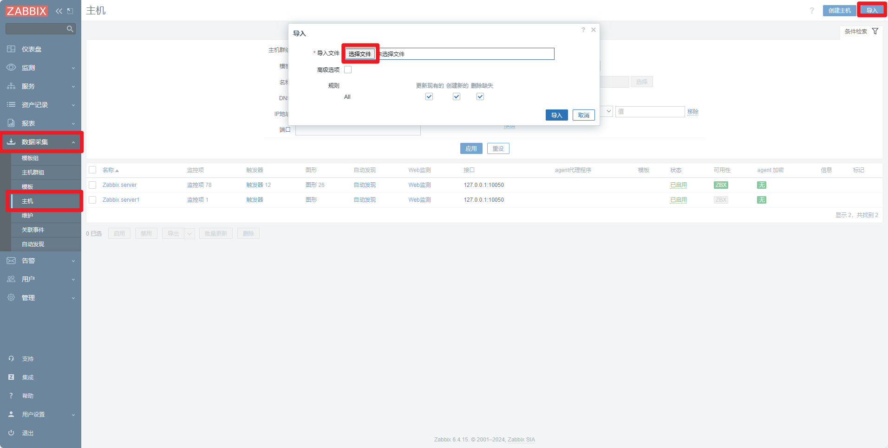

基于 Zabbix 的 DolphinDB 集群运维监控
在高并发的读写场景中，了解资源使用情况对于快速定位性能问题至关重要。作为一种企业级分布式开源监控解决方案，Zabbix 在各行各业都得到广泛应用。本教程提供 Zabbix 对 DolphinDB 集群的资源监控、告警和预警方案。
1. 方案概述
本方案适用于对多（或单）服务器以及 DolphinDB 高可用集群（或单节点）资源的监控、告警、预警。
1.1 Zabbix 概述
Zabbix 是一种基于 Server-Client 架构的网络监视和管理系统，由 Alexei Vladishev 开发。它用于监视各种网络服务、服务器和网络设备的状态。
Zabbix Server 是整个 Zabbix 软件的核心程序。它通过轮询和捕获数据，计算是否满足触发器条件，并向用户发送通知。
Zabbix Agent 是用于监控和管理远程主机的代理程序，定期收集系统性能数据并将其发送给 Zabbix 服务器进行分析和报告。通过安装 Zabbix Agent，管理员可以监控远程主机的 CPU 利用率、内存使用情况、磁盘空间、网络流量等系统性能指标，及时发现并解决潜在问题。
Zabbix Web 提供了监控数据的可视化呈现，通过图形、表格等方式展示监控数据，帮助用户更直观地了解系统状态和性能数据。
1.2 监控方案概述
本方案旨在监控 DolphinDB 进程对服务器资源的使用情况和 DolphinDB 的运行情况，包括 DolphinDB 进程的 CPU 占用情况、内存占用情况和磁盘资源使用情况等。为了获取当前节点的资源使用情况，DolphinDB 需要定义相应的运维函数。在本方案中，Zabbix Agent 可以抓取这些指标，并将其发送给 Zabbix Server 进行分析和报告。通过 Zabbix Web 对 Zabbix Server 采集的指标信息进行可视化，用户可以更直观地了解 DolphinDB 的性能和资源使用情况。
2. 软件部署
2.1 Zabbix 部署
从官网下载 Zabbix，下载链接为：https://www.zabbix.com/cn/download 。相关文档可参阅官方帮助。
本文所使用的软件版本如下：
-
Zabbix 版本：6.4
-
操作系统分布：Ubuntu
-
操作系统版本：22.04(Jammy)
-
数据库：MySQL
-
Web服务器：Nginx
2.2 DolphinDB 部署
DolphinDB 支持单节点、集群等多种部署方式，Zabbix 也支持监控这些不同部署方式的 DolphinDB 服务。
在本文中，我们使用的是 DolphinDB 2.00.12.1 版本的高可用集群，包括三个控制节点、三个数据节点和三个代理节点。
3. DolphinDB 监控项配置
为了让 Zabbix Agent 能够获取 DolphinDB 的各种指标信息，需要进行以下准备工作：
-
确保 DolphinDB 中包含获取指标信息的函数。
-
编写 Zabbix Agent 调用的 shell 文件。
-
配置 Zabbix Server 监控所需的指标。
3.1 DolphinDB 的监控指标
DolphinDB 目前支持的指标如下所示：
| 指标 | 含义 |
|---|---|
| cpuUsage | DolphinDB 进程占用 CPU 的百分比（单位：无） |
| memoryUsed | 节点使用的内存（单位：字节） |
| memoryAlloc | 节点中 DolphinDB 当前内存池的容量（单位：字节） |
| diskCapacity | 磁盘容量（单位：字节） |
| diskFreeSpace | 磁盘剩余空间（单位：字节） |
| lastMinuteWriteVolume | 前一分钟写磁盘容量(单位：字节) |
| lastMinuteReadVolume | 前一分钟读磁盘容量（单位：字节） |
| lastMinuteNetworkRecv | 前一分钟网络接收字节数（单位：字节） |
| lastMinuteNetworkSend | 前一分钟网络发送字节数（单位：字节） |
| diskReadRate | 磁盘读速率（单位：字节/秒） |
| diskWriteRate | 磁盘写速率（单位：字节/秒） |
| networkSendRate | 网络发送速率（单位：字节/秒） |
| networkRecvRate | 网络接收速率（单位：字节/秒） |
| cumMsgLatency | 流数据订阅节点所有已接收的消息的平均延时（单位：纳秒） |
| lastMsgLatency | 流数据订阅节点最后收到的消息的延时（单位：纳秒） |
| maxLast10QueryTime | 前10个完成的查询执行所耗费时间的最大值（单位：纳秒） |
| medLast10QueryTime | 前10个完成的查询执行所耗费时间的中间值（单位：纳秒） |
| medLast100QueryTime | 前100个完成的查询执行所耗费时间的中间值（单位：纳秒） |
| maxLast100QueryTime | 前100个完成的查询执行所耗费时间的最大值（单位：纳秒 |
| maxRunningQueryTime | 当前正在执行的查询的耗费时间的最大值（单位：纳秒） |
| avgLoad | 平均负载（单位：无） |
| jobLoad | 作业负载（单位：无） |
| runningJobs | 正在执行中的作业和任务数（单位：无） |
| queuedJobs | 队列中的作业和任务数（单位：无） |
| connectionNum | 节点连接数 |
3.2 定义获得 DolphinDB 监控指标的接口
在 DolphinDB 中运行以下脚本，添加 functionView 来定义获取 DolphinDB 监控指标的接口。
在脚本中，使用 login("admin","123456") 函数来登录 DolphinDB。请注意，账号应为
admin，密码应根据实际情况进行更改。
login("admin","123456")
def zabbix_dolphindb(node_item){
dataNode = select * from rpc(getControllerAlias(),getClusterPerf{1})
// 如果节点名称包含 . ，需要进行特殊判断
if(node_item.split(".").size()==2){
nodeAlias = node_item.split(".")[0]
metrics = node_item.split(".")[1]
whereConditions = expr(sqlCol("site"),like,"%"+nodeAlias+"%")
return sql(sqlCol(metrics),dataNode,whereConditions).eval()[metrics][0]
} else {
size = node_item.split(".").size()
nodeAlias = concat(node_item.split(".")[:size-1],".")
metrics = node_item.split(".")[size-1]
whereConditions = expr(sqlCol("site"),like,"%"+nodeAlias+"%")
return sql(sqlCol(metrics),dataNode,whereConditions).eval()[metrics][0]
}
}
addFunctionView(zabbix_dolphindb)3.3 定义 Shell 文件用于 Zabbix Agent 采集信息
-
定义 Shell 文件
请将以下 shell 文件命名为 zabbix_dolphindb.sh 并将其放置在
/etc/zabbix/zabbix_agentd.d 目录下。Zabbix Agent 将根据此 shell 脚本调用
DolphinDB 的 zabbix_dolphindb 函数，以获取 DolphinDB 的各种指标。
以下是需要更改的脚本参数：
-
dolphindbIp：DolphinDB 的 IP 地址。
-
dolphindbPort：DolphinDB 的端口号。
-
dolphindbAdmin：DolphinDB 的用户名，需要使用 admin 账户。
-
dolphindbPassword：DolphinDB 的密码，需要使用 admin 账户的密码。
dolphindbIp=192.198.1.31
dolphindbPort=8742
dolphindbAdmin=admin
dolphindbPassword=
dolphindb_command=$1
getDolphindbMessage(){
script='{"sessionID": "0","functionName": "executeCode","params": [{"name": "script","form": "scalar","type": "string","value": "login(\"'$dolphindbAdmin'\",\"'$dolphindbPassword'\");zabbix_dolphindb(\"'$dolphindb_command'\")"}]}'
command="curl -H \"Content-Type: application/json\" -X POST -d '$script' $dolphindbIp:$dolphindbPort -s"
result=$(eval $command)
echo $result | awk -F '"' '{print $34}' | xargs | bc
}
getDolphindbMessage请按照以下步骤为 Zabbix Agent 添加配置：
-
在 /etc/zabbix/zabbix_agentd.d目录下创建一个名为dolphindbMsg.conf的文件。
-
将以下内容添加到 dolphindbMsg.conf文件中：
UserParameter=dolphindb_status[*],/bin/bash /etc/zabbix/zabbix_agentd.d/zabbix_dolphindb.sh \$1这个配置文件会将 * 号中的内容传递给 zabbix_dolphindb.sh 这个 shell 文件，从而调用 DolphinDB 的
zabbix_dolphindb 函数。* 号中的内容即为函数的输入参数。
3.4 生成 Zabbix 监控模板
对于快速实现 DolphinDB 高可用集群与服务器资源的监控，我们提供了监控模板。您可以在 Zabbix Web 中导入相应的模板，从而实现监控指标的拉取、可视化和触发器功能。通过执行一个 Python3 脚本，您可以生成针对特定 DolphinDB 服务器的监控模板。
以下是需要更改的脚本参数：
-
dolphindbIp：DolphinDB 服务器的 IP 地址。
-
dolphindbPort：DolphinDB 服务器的端口号。
-
dolphindbAdmin：DolphinDB 的用户名，需使用
admin。 -
dolphindbPassword：DolphinDB 的密码。
-
hostName：对应 Zabbix Agent 配置文件中的
Hostname配置项。 -
groupName：Zabbix 中的主机组名称，可自定义填写。
-
ip：对应 Zabbix Agent 配置文件中的
Server配置项。
执行该 Python 3 脚本后，在当前目录下将生成一个名为 dolphindb.xml 的文件，这个文件即为 Zabbix Web 所需的监控模板。
from xml.etree import ElementTree as ET
import xmltodict
import dolphindb as ddb
dolphindbIp="192.168.100.43"
dolphindbPort=8742
dolphindbAdmin="admin"
dolphindbPassword=""
hostName="Zabbix server"
groupName="QuantDataCenter"
ip="127.0.0.1"
s = ddb.Session()
s.connect(dolphindbIp, dolphindbPort, dolphindbAdmin, dolphindbPassword)
nodes = s.run('exec name from rpc(getControllerAlias(),getClusterPerf{1}) where mode in [0,2,3,4]')
metrics = ["connectionNum","memoryUsed","memoryAlloc","cpuUsage","avgLoad","medLast10QueryTime","maxLast10QueryTime","medLast100QueryTime","maxLast100QueryTime","maxRunningQueryTime","runningJobs","queuedJobs","jobLoad","diskCapacity","diskFreeSpace","diskFreeSpaceRatio","diskWriteRate","diskReadRate","lastMinuteWriteVolume","lastMinuteReadVolume","networkSendRate","networkRecvRate","lastMinuteNetworkSend","lastMinuteNetworkRecv","lastMsgLatency","cumMsgLatency"]
example = {}
example['zabbix_export'] = []
item = []
for node in nodes:
for metric in metrics:
name = node + "." + metric
if metric == "connectionNum":
maxConnections = s.run("int(int(rpc('"+node+"', getConfig).maxConnections)*0.8)")
triggers = {"trigger": [{"expression": "{last()}>="+str(maxConnections)+""},{"name": name},{"url": "http://" + dolphindbIp + ":" + str(dolphindbPort)},{"priority": "HIGH"}]}
item.append({"name": name, "type": "ZABBIX_ACTIVE", "key": "dolphindb_status[" + name + "]", "value_type": "FLOAT","triggers": triggers})
elif metric == "memoryUsed":
maxMemSize = s.run("long(rpc('"+node+"', getConfig).maxMemSize)*1024*1024*1024*0.8")
triggers = {"trigger": [{"expression": "{last()}>="+str(maxMemSize)+""},{"name": name},{"url": "http://" + dolphindbIp + ":" + str(dolphindbPort)},{"priority": "HIGH"}]}
item.append({"name": name, "type": "ZABBIX_ACTIVE", "key": "dolphindb_status[" + name + "]", "value_type": "FLOAT","triggers": triggers})
elif metric == "cpuUsage":
workerNum = s.run("int(int(rpc('"+node+"', getConfig).workerNum)*100*0.8)")
print(workerNum)
triggers = {"trigger": [{"expression": "{last()}>="+str(workerNum)+""},{"name": name},{"url": "http://" + dolphindbIp + ":" + str(dolphindbPort)},{"priority": "HIGH"}]}
item.append({"name": name, "type": "ZABBIX_ACTIVE", "key": "dolphindb_status[" + name + "]", "value_type": "FLOAT","triggers": triggers})
elif metric == "avgLoad":
triggers = {"trigger": [{"expression": "{last()}>=4"},{"name": name},{"url": "http://" + dolphindbIp + ":" + str(dolphindbPort)},{"priority": "HIGH"}]}
item.append({"name": name, "type": "ZABBIX_ACTIVE", "key": "dolphindb_status[" + name + "]", "value_type": "FLOAT","triggers": triggers})
else:
item.append({"name": name, "type": "ZABBIX_ACTIVE", "key": "dolphindb_status[" + name + "]", "value_type": "FLOAT"})
host = []
host.append({"host": hostName})
host.append({"name": hostName})
host.append({"groups": {"group":{"name": groupName}}})
host.append({"interfaces": {"interface":[{"ip": "10.6.0.2"},{"interface_ref": "if1"}]}})
host.append({"items": {"item": item}})
colorList = ["1A7C11","2774A4","F63100","9FA8DA","303F9F","512DA8","FF5722","FFEE58","33691E"]
graphs = []
for metric in metrics:
i = 0
graph_item = []
for node in nodes:
name = node + "." + metric
if i == 0:
graph_item.append({"color": colorList[i], "item": {"host": hostName, "key": "dolphindb_status[" + name + "]"}})
else:
graph_item.append({"color": colorList[i], "sortorder": i,"item": {"host": hostName, "key": "dolphindb_status[" + name + "]"}})
i += 1
graphs.append({"graph":{"name": metric, "ymin_type_1": "FIXED","ymax_type_1": "FIXED","graph_items": {"graph_item": graph_item}}})
example['zabbix_export'].append({"version": 4.4})
example['zabbix_export'].append({"date": "2024-01-15T08:18:08Z"})
example['zabbix_export'].append({"groups": {"group": {"name": "QuantDataCenter"}}})
example['zabbix_export'].append({"hosts": {"host": host}})
example['zabbix_export'].append({"graphs": graphs})
xml_string = xmltodict.unparse({'root': example}, pretty=False)
f = open("dolphindb.xml","w")
f.write(xml_string.replace("</zabbix_export><zabbix_export>","").replace("</graphs><graphs>","").replace("</host><host>","").replace("</interface><interface>","").replace("<root>","").replace("</root>","").replace("</trigger><trigger>",""))
f.close()这个 py3 脚本会生成一个 XML 文件，其文件大致结构如下。
其中各节点含义为：
- zabbix_export：整个 XML 文件的根节点。
- version：模板的版本号。
- date：模板的创建日期时间。
- groups：定义主机群组的节点。
- group：具体的主机群组。
- name：主机群组的名称。
- group：具体的主机群组。
- hosts：定义主机相关配置的节点。
- host：具体的主机配置。
- name：主机的名称。
- interfaces：定义主机的网络接口信息。
- interface：具体的网络接口配置。
- ip：主机的 IP 地址。
- port：Zabbix 客户端使用的端口。
- useip：指定是否使用 IP 地址。
- interface：具体的网络接口配置。
- items：定义监控项的节点。
- item：具体的监控项配置。
- name：监控项的名称。
- type：监控项的类型。
- key：监控项的键值。
- value_type：信息类型。
- item：具体的监控项配置。
- triggers：定义触发器的节点。
- trigger：具体的触发器配置。
- expression：触发器的表达式。
- name：触发器的名称。
- url：菜单条目 URL。
- priority：触发器的严重性。
- trigger：具体的触发器配置。
- graphs：定义图形的节点。
- graph：具体的图形配置。
- name：图形的名称。
- ymin_type_1：图形 y 轴的最小值。
- ymax_type_1：图形 y 轴的最大值。
- graph_items：定义图形项的节点。
- graph_item：具体的图形项配置。
- color：指标显示的颜色。
- sortorder：指标的排名。
- item：需要显示的指标。
- host：主机的名称。
- key：显示的指标的键值。
- graph_item：具体的图形项配置。
- graph：具体的图形配置。
- host：具体的主机配置。
3.5 导入 Zabbix 监控模板
在 Zabbix Web 界面中，依次点击 "数据采集" -> "主机" -> "导入"，然后选择使用 Python3 生成的 Zabbix 监控模板进行导入。
导入后，应包含监控项、触发器和图形。

-
监控项：名称应为“节点名 + 监控指标”，用于监控 DolphinDB 的各项指标。

-
触发器：当 DolphinDB 的指标符合触发器条件时，触发警报。
-
图形：展示 DolphinDB 指标的可视化界面。
下图是 CPU 使用率的可视化界面。

3.6 监控指标的可视化效果展示
在 Zabbix Web 界面中，依次点击 "仪表盘" -> "编辑仪表盘" -> "添加"。
-
类型：选择 "图表（经典）"。
-
图形：选择包含 DolphinDB 监控项的主机。

以下是仪表盘的显示。
4. 告警
在第 3.5 步导入模板后，已设置触发器。一旦触发触发器，警告将显示在 Zabbix Web 界面上。警报和预警的主要目的是帮助相关人员了解服务器当前运行状况。当出现异常时，警报会提醒专业人员进行维护。不同的警报需要不同部门或运维人员介入处理，因此需要将不同的警报消息发送给不同的人员。
4.1 告警媒介
警报媒介的作用是按照制定的策略发送警报消息。
以下是 Zabbix 自带的警报媒介列表，配置后即可使用。
以下是一个使用自定义 shell 脚本进行企微告警的示例：
在 Zabbix Web 界面中，依次点击 "告警 " -> "媒介" -> "创建媒介类型"。

名称：发送信息到企业微信
类型：脚本
脚本名称：zabbix_sendMsg.sh
脚本参数：
-
第一个参数为发送的信息，固定格式为{ALERT.MESSAGE}
-
第二个参数为企业微信机器人的 key（如何设置群机器人 -帮助中心-企业微信 (qq.com)）

请按照以下步骤为 Zabbix Server 添加配置：
-
取消注释 Zabbix Server 的 AlertScriptsPath 配置项。
-
下面是 zabbix_sendMsg.sh脚本的内容，将其放置到zabbix_server.conf的AlertScriptsPath 配置项指定的路径下：
script='{"msgtype": "text","text": {"content": "'$1'"}}'
echo $1
command="curl -H \"Content-Type: application/json\" -X POST -d '$script' https://qyapi.weixin.qq.com/cgi-bin/webhook/send?key="$2" -s"
echo $(eval $command)4.2 创建报警动作
在 Zabbix Web 界面中，依次点击 "告警" → "动作" → "触发器动作" → "创建动作"。
动作配置如下：
-
名称：自定义内容
-
新的触发条件：主机等于 hostName
-
操作
发送给用户：选择 Admin
主题：Problem: {EVENT:NAME}
信息内容模板：
ZABBIX WARNING
告警时间: {EVENT.DATE} {EVENT.TIME}
告警项目: {EVENT.NAME}
告警等级: {EVENT.SEVERITY}
当前状态:{TRIGGER.STATUS}:{ITEM.VALUE1}
告警项目:{TRIGGER.KEY1}
问题详情:{ITEM.NAME}:{ITEM.VALUE}
{TRIGGER.URL}触发告警规则后，企业微信收到的信息样式如下：

至此，企业微信告警部署完毕，用户可根据上述步骤开启 DolphinDB 集群监控的企业微信告警。
5. 总结
本文讲述了 Zabbix agent 如何调用 shell 脚本来获取 DolphinDB 的各种指标，并定义报警媒介向企业微信报警。